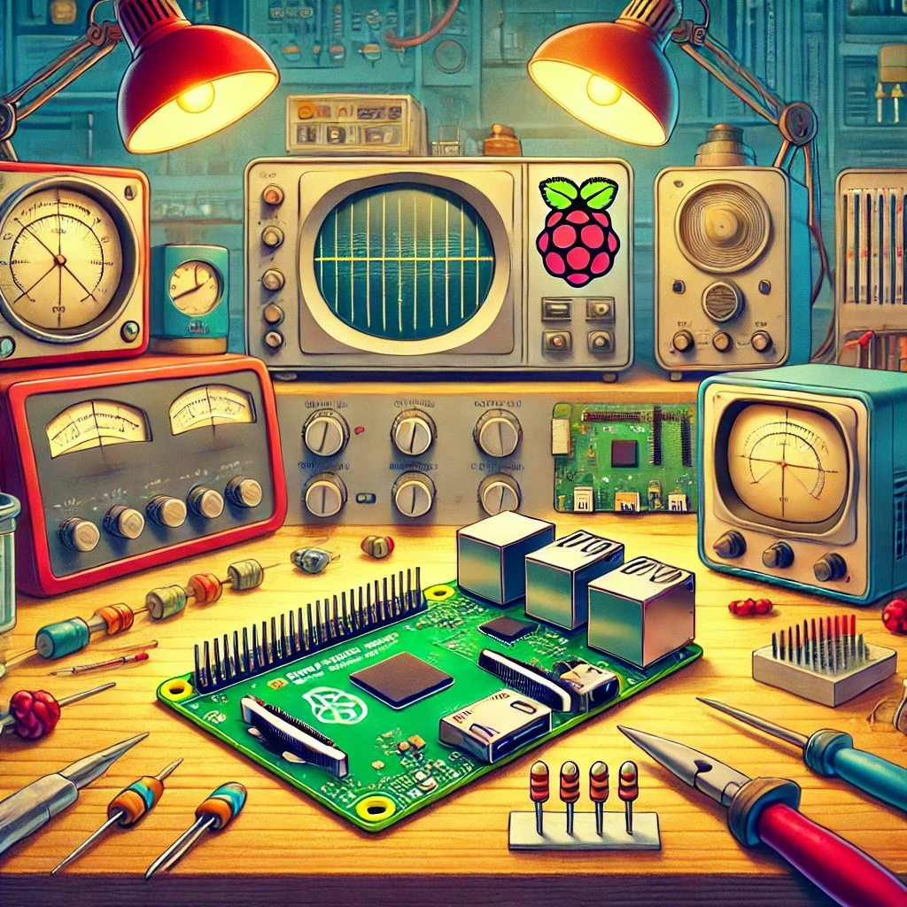
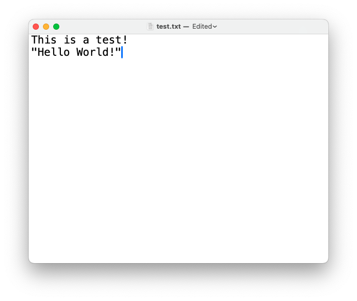
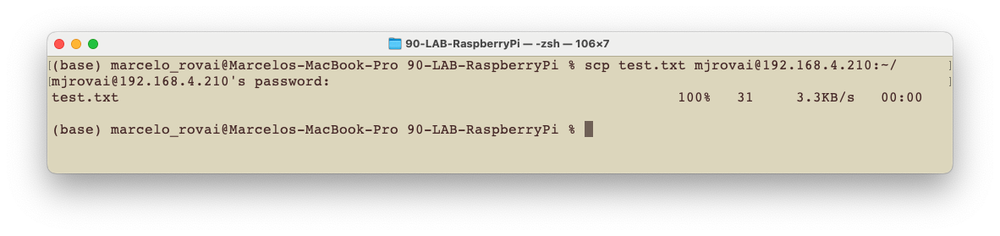
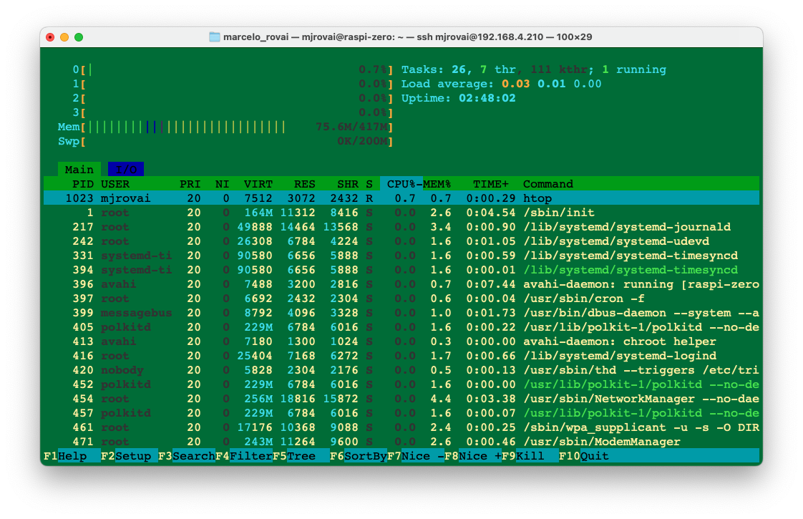

Setup

This chapter will guide you through setting up the Raspberry Pi Zero 2 W (Raspi-Zero) and the Raspberry Pi 5 (Raspi-5) models. We’ll cover hardware setup, operating system installation, initial configuration, and tests.
The general instructions for the Raspi-5 also apply to the older Raspberry Pi versions, such as the Raspi-3 and Raspi-4.
Introduction
The Raspberry Pi is a powerful and versatile single-board computer that has become an essential tool for engineers across various disciplines. Developed by the Raspberry Pi Foundation, these compact devices offer a unique combination of affordability, computational power, and extensive GPIO (General Purpose Input/Output) capabilities, making them ideal for prototyping, embedded systems development, and advanced engineering projects.
Key Features
Computational Power: Despite their small size, Raspberry Pis offer significant processing capabilities, with the latest models featuring multi-core ARM processors and up to 8GB of RAM.
GPIO Interface: The 40-pin GPIO header enables direct interaction with sensors, actuators, and other electronic components, facilitating hardware-software integration.
Extensive Connectivity: Built-in Wi-Fi, Bluetooth, Ethernet, and multiple USB ports enable a wide range of communication and networking projects.
Low-Level Hardware Access: Raspberry Pis provide access to interfaces such as I2C, SPI, and UART, enabling detailed control and communication with external devices.
Real-Time Capabilities: With proper configuration, Raspberry Pis can be used for soft real-time applications, making them suitable for control systems and signal processing tasks.
Power Efficiency: Low power consumption enables battery-powered and energy-efficient designs, especially in models like the Pi Zero.
Raspberry Pi Models (covered in this book)
- Raspberry Pi Zero 2 W (Raspi-Zero):
- Ideal for: Compact embedded systems
- Key specs: 1GHz single-core CPU (ARM Cortex-A53), 512MB RAM, minimal power consumption (usually, around 600mW in Idle. Also, the power-off (“zombie current”) is very low, at around 45 mA (225 mW), significantly lower than on full-size Raspberry Pi models.
- Raspberry Pi 5 (Raspi-5):
- Ideal for more demanding applications, such as edge computing, computer vision, and edgeAI applications, including LLMs.
- Key specs: 2.4GHz quad-core CPU (ARM Cortex A-76), up to 8GB RAM, PCIe interface for expansions, higher power consumption (usually, around 3-3.5W in Idle)
Engineering Applications
Embedded Systems Design: Develop and prototype embedded systems for real-world applications.
IoT and Networked Devices: Create interconnected devices and explore protocols like MQTT, CoAP, and HTTP/HTTPS.
Control Systems: Implement feedback control loops, PID controllers, and interface with actuators.
Computer Vision and AI: Utilize libraries like OpenCV and TensorFlow Lite for image processing and machine learning at the edge.
Data Acquisition and Analysis: Collect sensor data, perform real-time analysis, and create data logging systems.
Robotics: Build robot controllers, implement motion planning algorithms, and interface with motor drivers.
Signal Processing: Perform real-time signal analysis, filtering, and DSP applications.
Network Security: Set up VPNs, firewalls, and explore network penetration testing.
This lab will guide you through setting up the most common Raspberry Pi models, so you can get started on your machine learning project quickly. We’ll cover hardware setup, operating system installation, and initial configuration, focusing on preparing your Pi for Machine Learning applications.
Hardware Overview
Raspberry Pi Zero 2W
- Processor: 1GHz quad-core 64-bit Arm Cortex-A53 CPU
- RAM: 512MB SDRAM
- Wireless: 2.4GHz 802.11 b/g/n wireless LAN, Bluetooth 4.2, BLE
- Ports: Mini HDMI, micro USB OTG, CSI-2 camera connector
- Power: 5V/2.5A via micro USB port 12.5W Micro USB power supply
Raspberry Pi 5

- Processor:
- Pi 5: Quad-core 64-bit Arm Cortex-A76 CPU @ 2.4GHz
- Pi 4: Quad-core Cortex-A72 (ARM v8) 64-bit SoC @ 1.5GHz
- RAM: 2GB, 4GB, or 8GB options (8GB recommended for AI tasks)
- Wireless: Dual-band 802.11ac wireless (2.4 GHz and 5 GHz), Bluetooth 5.0
- Ports: 2 × micro HDMI ports, 2 × USB 3.0 ports, 2 × USB 2.0 ports, CSI camera port, DSI display port
- Power: 5V/5A, 5V/3A limits peripherals to 600mA, via USB-C connector 27W USB-C power supply
In the labs, we will use different names to address the Raspberry Pi:
Raspi,Raspi-5,Raspi-Zero, etc. Usually, “Raspi” or “Raspberry Pi” is used when the instructions or comments apply to all models.
Installing the Operating System
The Operating System (OS)
An operating system (OS) is essential software that manages computer hardware and software resources, providing standard services for computer programs. It is the core software that runs on a computer, serving as an intermediary between hardware and application software. The OS oversees the computer’s memory, processes, device drivers, files, and security protocols.
- Key functions:
- Process management: Allocating CPU time to different programs
- Memory management: Allocating and freeing up memory as needed
- File system management: Organizing and keeping track of files and directories
- Device management: Communicating with connected hardware devices
- User interface: Providing a way for users to interact with the computer
- Components:
- Kernel: The core of the OS that manages hardware resources
- Shell: The user interface for interacting with the OS
- File system: Organizes and manages data storage
- Device drivers: Software that allows the OS to communicate with hardware
The Raspberry Pi runs a specialized version of Linux designed for embedded systems. This operating system, typically a variant of Debian called Raspberry Pi OS (formerly Raspbian), is optimized for the Pi’s ARM-based architecture and limited resources.
The latest version of Raspberry Pi OS (Dec 25) is based on Debian Trixie.
Key features:
- Lightweight: Tailored to run efficiently on the Pi’s hardware.
- Versatile: Supports a wide range of applications and programming languages.
- Open-source: Allows for customization and community-driven improvements.
- GPIO support: Enables interaction with sensors and other hardware through the Pi’s pins.
- Regular updates: Continuously improved for performance and security.
Embedded Linux on the Raspberry Pi provides a full-featured operating system in a compact package, making it ideal for projects ranging from simple IoT devices to more complex edge machine-learning applications. Its compatibility with standard Linux tools and libraries makes it a powerful platform for development and experimentation.
Installation
To use the Raspberry Pi, we will need an operating system. By default, Raspberry Pis check for an operating system on any SD card inserted in the slot, so we should install an operating system using Raspberry Pi Imager.
In November 2025, the Raspberry Pi Imager 2.0 was launched. It brings a new wizard interface, the opportunity to pre-configure Raspberry Pi Connect, and improved accessibility for screen readers and other assistive technologies.
Raspberry Pi Imager is a tool for downloading and writing images on macOS, Windows, and Linux. It includes many popular operating system images for Raspberry Pi. We will also use the Imager to preconfigure credentials and remote access settings.
Follow the steps to install the OS on your Raspberry Pi.
- Download and install the Raspberry Pi Imager on your computer.
- Insert a microSD card into your computer (a 32GB SD card is recommended) .
- Open Raspberry Pi Imager and select your Raspberry Pi model.

Choose the appropriate operating system:
- For Raspi-Zero: For example, you can select under
Raspberry Pi OS (Other),Raspberry Pi OS Lite (64-bit).

Due to the Raspberry Pi Zero’s limited SDRAM (512 MB), the recommended OS is the 32-bit version. However, to run some machine learning models, such as the YOLO from Ultralitics, we should use the 64-bit version. Although the Raspi-Zero can run a desktop, we will choose the LITE version (no Desktop) to reduce the RAM needed for regular operation.
- For Raspi-5: We can select the full 64-bit version, which includes a desktop:
Raspberry Pi OS (64-bit)

- For Raspi-Zero: For example, you can select under
Select your microSD card as the storage device.
Click
Next, then go to theCustomizationtab. The imager will guide you through setting the hostname, the Raspberry Pi username and password, configuring WiFi, and enabling SSH (Very important!).Write the image to the microSD card.
In the examples here, we will use different hostnames depending on the device used: raspi, raspi-5, raspi-Zero, etc. Please replace it with the one you’re currently using.
Initial Configuration
- Insert the microSD card into your Raspberry Pi.
- Connect the power to boot up the Raspberry Pi. For the Rasp-5, use a 5V/3A (or 5A) external Power supply. For the Rasp-Zero, use a 5V/2.5A external Power supply (Optionally, for light use, you can use the computer’s USB port to power the Rasp-Zero).

- Please wait for the initial boot process to complete (it may take a few minutes).
You can find the most common Linux commands for the Raspberry Pi here or here.
Remote Access
SSH Access
The easiest way to interact with the Raspi-Zero is via SSH (“Headless”). You can use a Terminal (MAC/Linux), PuTTy (Windows), or any other.
The Raspberry Pi and the notebook should be on the same WiFi network. Note that the Raspberry Pi 5 supports dual-band 802.11ac Wi-Fi (2.4 GHz and 5 GHz), whereas the Raspberry Pi Zero 2W supports only 2.4 GHz.
Find your Raspberry Pi’s IP address (for example, check your router).
On your computer, open a terminal and connect via SSH:
ssh username@[raspberry_pi_ip_address]Alternatively, if you do not have the IP address, you can try, for example,
ssh mjrovai@rpi-5.local,ssh mjrovai@raspi.local, etc.:bash ssh username@hostname.localWhen you see the prompt:mjrovai@rpi-5:~ $It means you are interacting with your Raspberry Pi remotely.
It is a good practice to regularly update/upgrade the system. For that, you should run:
sudo apt-get update sudo apt upgrade sudo reboot # Reboot to ensure all updates take effectYou should confirm the Raspberry Pi IP address. On the terminal, you can use:
hostname -I

Also, check the current Python version:
python3 --versionOnce we use the latest Raspberry Pi OS (based on Debian Trixie), it should be: 3.13:

As of today (January 2026), some packages, such as ExecuTorch, officially support only Python versions 3.10-3.12. Python 3.13.5 is too new and will likely cause compatibility issues. Since Debian Trixie ships with Python 3.13 by default, we’ll need to install a compatible Python version alongside it.
One solution is to install Pyenv, so that we can easily manage multiple Python versions for different projects without affecting the system Python. We will do it in the appropriate Lab. For now, we will keep the system Python.
If the Raspberry Pi OS is the legacy, the Python version should be 3.11, and it is not necessary to install Pyenv.
To shut down the Raspi via terminal:
When you want to turn off your Raspberry Pi, there are better ideas than just pulling the power cord. This is because the Raspi may still be writing data to the SD card, in which case merely powering down may result in data loss or, even worse, a corrupted SD card.
For a safety shutdown, use the command line:
sudo shutdown -h nowTo avoid possible data loss and SD card corruption, before removing power, wait a few seconds after shutdown for the Raspberry Pi’s LED to stop blinking and go dark. Once the LED goes out, it’s safe to power down.
Transfer Files between the Raspberry Pi and a computer
Transferring files between the Raspberry Pi and our main computer can be done using a USB drive, via the terminal (scp), or an FTP program over the network.
Using Secure Copy Protocol (scp):
Copy files to your Raspberry Pi
Let’s create a text file on our computer, for example, test.txt.

You can use any text editor. In the same terminal, an option is
nano.
To copy the file named test.txt from your personal computer to a user’s home folder on your Raspberry Pi, run the following command from the directory containing test.txt, replacing the <username> placeholder with the username you use to log in to your Raspberry Pi and the <pi_ip_address> placeholder with your Raspberry Pi’s IP address:
$ scp test.txt <username>@<pi_ip_address>:~/Note that
~/means we will move the file to the ROOT of our Raspberry Pi. You can choose any folder in your Raspberry Pi. But you should create the folder before you runscp, sincescpwon’t create folders automatically.
For example, let’s transfer the file test.txt to the ROOT of my Raspberry Pi Zero, which has an IP of 192.168.4.210:
scp test.txt mjrovai@192.168.4.210:~/
I use a different profile to differentiate the terminals. The action above occurs on your computer. Now, let’s go to our Raspi (using SSH) and check if the file is there:

Copy files from your Raspberry Pi
To copy a file named test.txt from a user’s home directory on a Raspberry Pi to the current directory on another computer, run the following command on your Host Computer:
$ scp <username>@<pi_ip_address>:myfile.txt .For example:
On the Raspi, let’s create a copy of the file with another name:
cp test.txt test_2.txtAnd on the Host Computer (in my case, a Mac)
scp mjrovai@192.168.4.210:test_2.txt .Transferring files using FTP
Transferring files via FTP, such as FileZilla FTP Client, is also possible and much easier to use. Follow the instructions to install the program on your Desktop, then use the Raspberry Pi’s IP address as the Host. For example:
sftp://192.168.4.210Enter your Raspberry Pi username and password. Pressing Quickconnect opens two windows, one for your host computer desktop (right) and another for the Raspberry Pi (left).

Increasing SWAP Memory
Using htop, a cross-platform interactive process viewer, we can easily monitor resources on our Raspberry Pi in real time, including the list of processes, the running CPUs, and the memory usage. To lunch hop, enter with the command on the terminal:
htop
Regarding memory, among the Raspberry Pi family, the Raspberry Pi Zero has the least SRAM (500 MB), compared to 2GB to 16GB on the Raspberry Pi 4 or 5.
On any Raspberry Pi, it is possible to increase/modify the system’s available memory using “Swap.” Swap memory, also known as swap space, is a technique used in computer operating systems to temporarily store data from RAM (Random Access Memory) on the SD card when the physical RAM is fully utilized. This allows the operating system (OS) to continue running even when RAM is full, which can prevent system crashes or slowdowns.
Swap memory benefits devices with limited RAM, such as the Raspberry Pi Zero. Increasing swap can help run more demanding applications or processes, but it’s essential to balance this with the potential performance impact of frequent disk access.
We can check the swap memory using htopor by the command:
sudo swapon --show
On the Debian Trixie, 2 MB of swap memory is configured by default on the Rasp-5 and 512MB on the Raspi-Zero
By default, the Rapi-Zero’s SWAP (zram) memory is 512MB, which may be insufficient for running more complex and demanding Machine Learning applications (for example, YOLO). So, let’s increase it to 2MB:
On Zero 2 W with Raspberry Pi OS Trixie, you configure rpi-swap by dropping a small config file into /etc/rpi/swap.conf.d/. The same mechanism works on Pi 5 and Zero‑2.
Below are two common patterns: fixed swap file (on SD/SSD) and fixed zram size (in RAM). ### Fixed‑size swap file (e.g., 2 GB on SD)
Create the override directory (if not already there):
sudo mkdir -p /etc/rpi/swap.conf.dCreate an override file:
sudo nano /etc/rpi/swap.conf.d/fixedswapsize.confPut this in it (example: 2 GB = 2048 MiB):
[Main] Mechanism=swapfile [File] FixedSizeMiB=2048Mechanism=swapfiletellsrpi-swapto use a classic swap file.
FixedSizeMiBis the exact size we want, in MiB.
Apply:
sudo systemctl restart rpi-swap swapon --show
We should now see /var/swap with the size we set.
Fixed‑size zram (better for Zero‑2’s SD card)
If we want to keep everything in compressed RAM (no SD wear), we can set a fixed zram size instead:
Create the same drop‑in file:
sudo nano /etc/rpi/swap.conf.d/fixedzram.confSet the zram swap:
[Main] Mechanism=zram [Zram] FixedSizeMiB=2048Apply and check:
sudo systemctl restart rpi-swap swapon --show
We should see /dev/zram0 with the new size.
Notes specific to Zero 2 W Trixie
- Default Trixie on Zero‑2 uses
rpi-swapwith zram sized roughly to RAM×1, capped byMaxSizeMiB(usually 2048), and no swap file unless you add it. - If we create multiple drop‑ins in
/etc/rpi/swap.conf.d/, they are merged; keep it simple with one clear override file per board/use‑case.
To keep htop running, open another terminal window to continuously interact with the Raspberry Pi.
Installing a Camera
The Raspberry Pi is an excellent device for computer vision applications that require a camera. We can install a camera module connected to the Raspberry Pi CSI (Camera Serial Interface) port, or a standard USB webcam on the micro-USB port using a USB OTG adapter (Raspi-Zero) or directly on the USB port on the Raspi-5.
USB Webcams generally have inferior image quality compared to camera modules that connect to the CSI port. They can not be controlled using the raspistill and rasivid commands in the terminal, or the
picamerarecording package in Python. Nevertheless, there may be reasons you want to connect a USB camera to your Raspberry Pi, such as setting up multiple cameras with a single Raspberry Pi, avoiding long cables, or simply because you have such a camera on hand.
Installing a Camera Module on the CSI port
There are now several Raspberry Pi camera modules. The original 5-megapixel model was releasedin 2013, followed by the 8-megapixel Camera Module 2, released in 2016. The latest camera model is the 12-megapixel Camera Module 3, released in 2023.
The original 5MP camera (Arducam OV5647) is no longer available from Raspberry Pi but can be found from several alternative suppliers. Below is an example of such a camera on a Raspberry Pi Zero.

Here is another example of a v2 Camera Module, which has a Sony IMX219 8-megapixel sensor:
First, try to list the installed cameras:
rpicam-hello --list-camerasIf the command is not recognized, install
sudo apt install libcamera-appsTry to list the installed camera again. If Ok, you should see something like:
Any camera module will work on the Raspberry Pi, but for that, it is possible that the config.txt file must be updated:
sudo nano /boot/firmware/config.txtAt the bottom of the file, for example, to use the 5MP Arducam OV5647 camera, add the line:
dtoverlay=ov5647,cam0Or for the v2 module, wich has the 8MP Sony IMX219 camera:
dtoverlay=imx219,cam0Save the file (CTRL+O [ENTER] CRTL+X) and reboot the Raspi:
Sudo rebootAfter the boot, you can see if the camera is listed:
rpicam-hello --list-cameras

libcamerais an open-source software library that supports camera systems directly on Linux for Arm processors. It minimizes the amount of proprietary code running on the Broadcom GPU.
Let’s capture a JPEG image with a resolution of 640 x 480 for testing and save it to a file named test_cli_camera.jpg
rpicam-jpeg --output test_cli_camera.jpg --width 640 --height 480To view the saved file, we should use ls, which lists the contents of the current directory:

As before, we can use scp to view the image:
Alternatively, you can transfer it to your desktop using FileZilla.
Installing a USB WebCam
- Power off the Raspi:
sudo shutdown -h no- Connect the USB Webcam (USB Camera Module 30 fps, 1280x720) to your Raspberry Pi (in this example, I am using a Raspberry Pi Zero, but the instructions work for all Raspberry Pis).

- Power on again and run the SSH
- To check if your USB camera is recognized, run:
lsusbYou should see your camera listed in the output.

- To take a test picture with your USB camera, use:
fswebcam test_image.jpgThis will save an image named “test_image.jpg” in your current directory.

- Since we are using SSH to connect to our Rapsi, we must transfer the image to our main computer so we can view it. We can use FileZilla or SCP for this:
Open a terminal on your host computer and run:
scp mjrovai@raspi-zero.local:~/test_image.jpg .Replace “mjrovai” with your username and “raspi-zero” with Pi’s hostname.
- If the image quality isn’t satisfactory, you can adjust various settings; for example, define a resolution that is suitable for YOLO (640x640):
fswebcam -r 640x640 --no-banner test_image_yolo.jpgThis captures a higher-resolution image without the default banner.

An ordinary USB Webcam can also be used:

And verified using lsusb

Video Streaming
For stream video (which is more resource-intensive), we can install and use mjpg-streamer:
First, install Git:
sudo apt install gitNow, we should install the necessary dependencies for mjpg-streamer, clone the repository, and proceed with the installation:
sudo apt install cmake libjpeg62-turbo-dev
git clone https://github.com/jacksonliam/mjpg-streamer.git
cd mjpg-streamer/mjpg-streamer-experimental
make
sudo make installThen start the stream with:
mjpg_streamer -i "input_uvc.so" -o "output_http.so -w ./www"We can then access the stream by opening a web browser and navigating to:
http://<your_pi_ip_address>:8080. In my case: http://192.168.4.210:8080
We should see a webpage with options to view the stream. Click on the link that says “Stream” or try accessing:
http://<raspberry_pi_ip_address>:8080/?action=stream
Running the Raspi Desktop remotely
While we’ve primarily interacted with the Raspberry Pi via SSH terminal commands, we can access the full graphical desktop environment remotely if we have installed the complete Raspberry Pi OS (for example, Raspberry Pi OS (64-bit). This can be particularly useful for tasks that benefit from a visual interface. To enable this functionality, we must set up a VNC (Virtual Network Computing) server on the Raspberry Pi. Here’s how to do it:
Enable the VNC Server:
Connect to your Raspberry Pi via SSH.
Run the Raspberry Pi configuration tool by entering:
sudo raspi-configNavigate to
Interface Optionsusing the arrow keys.

- Select
VNCandYesto enable the VNC server.

- Exit the configuration tool (use
[Tab]), saving changes when prompted.

Install a VNC Viewer on Your Computer:
- Download and install a VNC viewer application on your main computer. Popular options include RealVNC Viewer, TightVNC, or VNC Viewer by RealVNC. We will install VNC Viewer by RealVNC.
Once installed, confirm the Raspberry Pi’s IP address. For example, on the terminal, you can use:
hostname -I
Connect to Your Raspberry Pi:
- Open your VNC viewer application.

- Enter your Raspberry Pi’s IP address and hostname.
- When prompted, enter your Raspberry Pi’s username and password.
The Raspberry Pi 5 Desktop should appear on your computer monitor.

Adjust Display Settings (if needed):
- Once connected, adjust the display resolution for optimal viewing. This can be done through the Raspberry Pi’s desktop settings or by modifying the config.txt file.
- Let’s do it using the desktop settings. Reach the menu (the Raspberry Icon at the left upper corner) and select the best screen definition for your monitor:

Updating and Installing Software
Update your system:
sudo apt update && sudo apt upgrade -yInstall essential software:
sudo apt install python3-pip -yEnable pip for Python projects:
sudo rm /usr/lib/python3.11/EXTERNALLY-MANAGED
AVOID using PIP for System-Level dependencies libraries
Use
sudo apt install(outside of a virtual environment (venv) for:
System-level dependencies and libraries
Hardware interface libraries (as a camera)
Development headers and build tools
Anything that needs to interface directly with hardware
Rule of thumb: Use sudo apt install only for system dependencies and hardware interfaces. Use pip install (without sudo) inside an activated virtual environment for everything else. Inside the vent, PIP or PIP3 are the same.
Model-Specific Considerations
Raspberry Pi Zero (Raspi-Zero)
- Limited processing power, best for lightweight projects
- It is better to use a headless setup (SSH) to conserve resources.
- Consider increasing swap space for memory-intensive tasks.
- It can be used for Image Classification and Object Detection Labs, but not for the LLM (SLM).
Raspberry Pi 4 or 5 (Raspi-4 or Raspi-5)
- Suitable for more demanding projects, including AI and machine learning.
- It can run the whole desktop environment smoothly.
- The Raspberry Pi 4 can be used for Image Classification and Object Detection Labs, but it will not work well with LLMs (SLM) due to high latency.
- For the Raspberry Pi 5, consider using an active cooler to manage temperature during intensive tasks, as in the LLMs (SLMs) lab.
Remember to adjust your project requirements based on the specific Raspberry Pi model you’re using. The Raspi-Zero is great for low-power, space-constrained projects, while the Raspi-4 or 5 models are better suited for more computationally intensive tasks.
Here’s a concise, copy‑pasteable tutorial you can share or publish.
Measuring Temperature and Power
In this section, we will explore how to measure (and monitor) CPU temperature and power consumption on a Raspberry Pi 5 using only built‑in tools and a small shell script.
Check CPU Temperature
Quick one‑shot reading
vcgencmd measure_tempExample:
temp=47.2'CThis is the SoC (CPU/GPU) temperature in degrees Celsius.
Continuous temperature monitor
watch -n 2 vcgencmd measure_temp- Updates every 2 seconds.
- Press
Ctrl+Cto stop.
Reading from sysfs (for scripts)
cat /sys/class/thermal/thermal_zone0/tempThe result is in millidegrees Celsius (e.g., 47200 = 47.2 °C).
We should convert to human‑readable:
echo $(($(cat /sys/class/thermal/thermal_zone0/temp) / 1000))'°C'Understand Power Measurement on Pi 5
Raspberry Pi 5 exposes internal PMIC rails via vcgencmd pmic_read_adc.
vcgencmd pmic_read_adcExample (truncated):
3V3_SYS_A current(1)=0.06245952A
1V8_SYS_A current(2)=0.16102850A
...
3V3_SYS_V volt(13)=3.29687500V
1V8_SYS_V volt(14)=1.79687500V
...To get power, we need to sum \[P_i = V_i \times I_i\] over all rails. This gives board core power, not exact wall power (USB devices and PSU losses are not fully included).
Script: Average Temperature and Power
Let’s create a script that:
- Samples once per second for N seconds.
- Computes the average CPU temperature.
- Sums all PMIC rails to get power.
- Applies a linear correction to estimate real board power, based on the RPi5‑power calibration.
Create the script
nano avg_temp_power.shPaste:
#!/bin/bash
# avg_temp_power.sh
# Measure average CPU temperature and power on Raspberry Pi 5
SECONDS=50 # number of samples (1 per second)
TEMP_FILE=$(mktemp)
PMIC_FILE=$(mktemp)
echo "Sampling for ${SECONDS} seconds..."
for i in $(seq 1 ${SECONDS}); do
# --- Temperature (°C) ---
temp_c=$(vcgencmd measure_temp | cut -d= -f2 | cut -d"'" -f1)
echo "$temp_c" >> "${TEMP_FILE}"
# --- PMIC power sum (W) ---
pmic_line=$(vcgencmd pmic_read_adc)
volts=($(echo "$pmic_line" | grep -o "volt([^)]*)=[0-9.]*V" | sed 's/.*=//;s/V//'))
currents=($(echo "$pmic_line" | grep -o "current([^)]*)=[0-9.]*A" | sed 's/.*=//;s/A//'))
sum_pmic=0
for idx in "${!volts[@]}"; do
v=${volts[$idx]}
i_amp=${currents[$idx]}
sum_pmic=$(awk -v a="$sum_pmic" -v b="$v" -v c="$i_amp" \
'BEGIN{printf "%.8f", a + b*c}')
done
echo "$sum_pmic" >> "${PMIC_FILE}"
sleep 1
done
# --- Compute statistics ---
awk -v corr_a=1.1451 -v corr_b=0.5879 '
function stats(file, x, n, sum, sum2, mean, std) {
while ((getline x < file) > 0) {
n++
sum += x
sum2 += x*x
}
close(file)
if (n > 1) {
mean = sum / n
std = sqrt( (sum2 - (sum*sum)/n) / (n-1) )
} else {
mean = sum
std = 0
}
return mean "|" std
}
BEGIN{
split(stats("'"${TEMP_FILE}"'"), t, "|")
t_mean = t[1]
t_std = t[2]
split(stats("'"${PMIC_FILE}"'"), p, "|")
p_pmic_mean = p[1]
p_pmic_std = p[2]
# Apply linear correction for real power estimate (RPi5-power calibration)
p_real_mean = corr_a * p_pmic_mean + corr_b
p_real_std = corr_a * p_pmic_std
printf "Average_temperature = %.2f +/- %.2f °C\n", t_mean, t_std
printf "Average_pmic_power = %.3f +/- %.3f W\n", p_pmic_mean, p_pmic_std
printf "Estimated_real_power = %.3f +/- %.3f W\n", p_real_mean, p_real_std
}
' /dev/null
rm -f "${TEMP_FILE}" "${PMIC_FILE}"Save and exit.
Make it executable
chmod +x avg_temp_power.shRun a measurement
Idle baseline:
./avg_temp_power.shExample output (30–50 s window, active fan):
Sampling for 50 seconds...
Average_temperature = 47.25 +/- 0.40 °C
Average_pmic_power = 2.312 +/- 0.298 W
Estimated_real_power = 3.235 +/- 0.341 WThen start a heavy workload (e.g., Llama 3.2:3B) in another terminal and run the script again during inference. You should see higher temperature and power, often around 70–75 °C and 10–11 W with active cooling.

Interpreting the Results
Typical Raspberry Pi 5 ranges with active cooling:
| State | Temp (°C) | Estimated real power (W) |
|---|---|---|
| Idle CLI | 40–50 | 3.0–3.5 |
| Light desktop | 50–60 | 4–5 |
| Moderate CPU load | 55–70 | 5–7 |
| Heavy CPU/GPU | 70–80 | 7–10 |
- Throttling usually starts around 80 °C, with a hard limit at 85 °C.[5]
- If we are well below that under full load, your cooling solution is working properly.